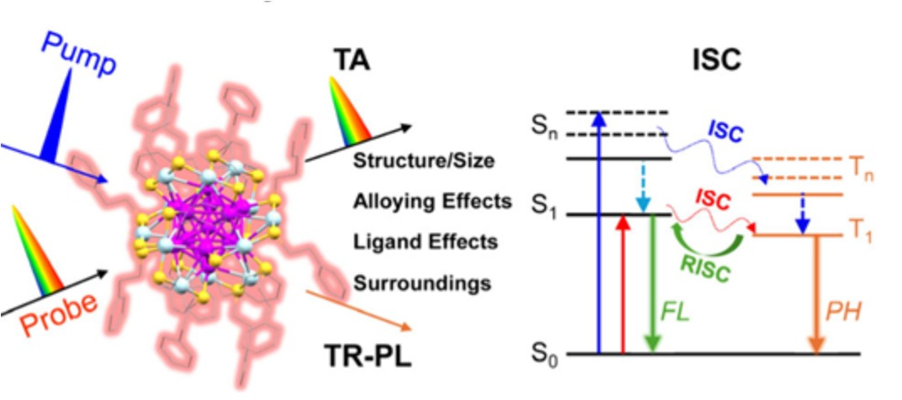
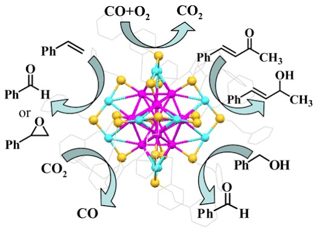

Synthesis of APNCs and quantum rods
Controlling nanoparticles with atomic precision and solving their total structures have long been major dreams for nanochemists — dreams now realized in the ultrasmall (1–3 nm) regime. We synthesize gold and alloy nanoclusters and rod-shaped clusters with single-atom control, determine their total structures by single-crystal X-ray diffraction, and build the structure–property maps that make rational materials design possible.
Further reading: Jin, Zeng, Zhou & Chen, Chem. Rev. 2016, 116, 10346 · Kang, Li, Zhu & Jin, Chem. Soc. Rev. 2020, 49, 6443

NIR photoluminescence and photothermy of APNCs
The photoluminescence of gold nanoclusters can span the visible to the second near-infrared window (NIR-II) and even beyond 1700 nm by manipulating size, structure and composition. We pursue the structure–PL correlation, strategies for raising quantum yields in the NIR-II — where every percent is hard-won — and the controlled conversion of absorbed light into heat (photothermy) for imaging and therapeutic applications.
Further reading: Liu, Luo & Jin, Adv. Mater. 2024, 36, 2309073

Ultrafast transient absorption dynamics
Femtosecond transient absorption spectroscopy lets us watch excited states evolve in real time. In atomically precise clusters, exciton and electron dynamics show strong size dependence, and coherent oscillations reveal how structure steers excited-state relaxation — the mechanistic bedrock beneath bright NIR emission.
Further reading: Zhou & Jin, Annu. Rev. Phys. Chem. 2021, 72, 121

Nanocluster photocatalysis
Atomically precise nanoclusters are expected to become a promising class of model catalysts. These welldefined nanoclusters will provide new opportunities for achieving fundamental understanding of metal nanocatalysis, such as insight into size dependence and deep understanding of molecular activation, active centers, and catalytic mechanisms through correlation of behavior with the structures of nanoclusters.
Further reading: Li & Jin, Acc. Chem. Res. 2013, 46, 1749
